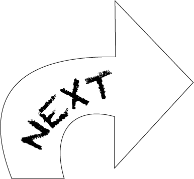

research
user feedback
wireframing
iterating
prototyping (figma)
TICKIT was a project that I worked on at university during the User Experience course. For this, I was required to identify a day-to-day experience and then find a way to improve this paticular experience. I ultimately opted to focus on the experience of informally lending money to friends and family as I felt that the process had a lot of pain points and negative emotions associated with the process.
The process of this project was long and included a wide range of tasks. Although the ultimate goal was to create a solution or mean of improvement, a large portion of work consisted of researching how users interacted with the experience and how I can use this information to improve the experience for them. I did multiple sessions of user-testing and gathering user feedback which helped me to design the application TICKIT.
I designed the application TICKIT to help people to track small day-to-day loans with friends and family. In the process I created many sets of wireframes, then worked with users to make iterations which were better suited to fit the users needs. From there, I created high-fidelity prototypes of the application using FIGMA which were tested on users and further evaluated.
Through this project, I learnt many skills however the biggest take-away was that I learnt how much value there is in proper research and user-testing before the developing process. By learning about the user and then designing towards the needs and motivations of users, it allowed me to make changes and additions to ensure that the experience is smooth and user-friendly. I also learnt many technical skills around prototyping, especially through figma.
